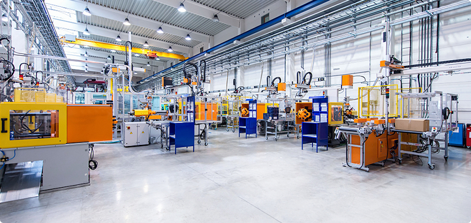

城市最佳实践区 （Urban Best Practice Area 简称“UBPA”)位于世博会围栏区的浦西E片区，占地面积约为15.08公顷，是集创意设计、交流展示、产品体验等为一体，集成模拟生活街区。园区有多个使命，使园区的管理需求变得更高，可持续化，历史建筑保护，和环保等诉求，使管理维度多层次，很难做到更高效的管理。
设备种类和供应商繁多
管理区域分散
故障问题处理缓慢
传统的管理模式，面对园区的管理范围大而建筑分散，不能及时的进行问题的处理；再加上设备种类复杂，客户业态复杂，使园区在管理中仍然存在较大的隐患。针对本项目案例，介谷科技制定了相应的解决办法。
针对本项目为园区规划智能管理系统，建立统一的管理平台，实现信息资源的数据库共享，提高园区管理效率、丰富决策依据，让园区记录项目资源信息，实现园区内各区域之间信息资源的互联互通。
针对本项目工单管理进行升级，有效的节省物业管理的时间成本，提高员工工作效率，使部门协做更加顺畅，管理更加移动化。